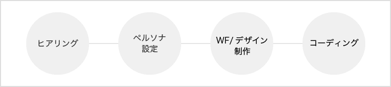
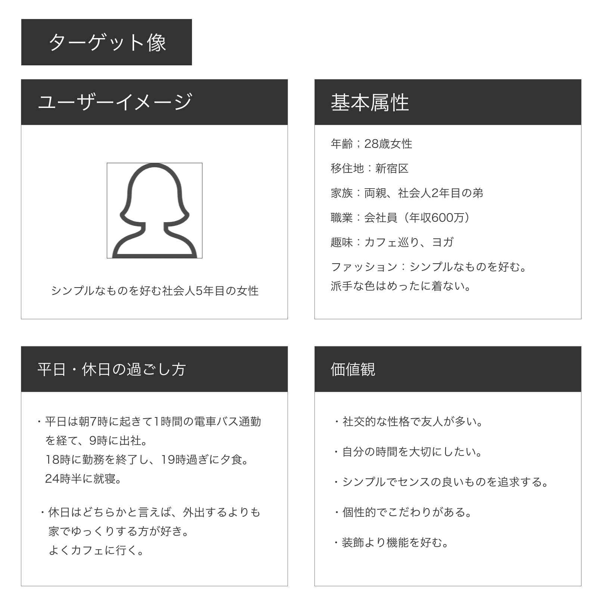
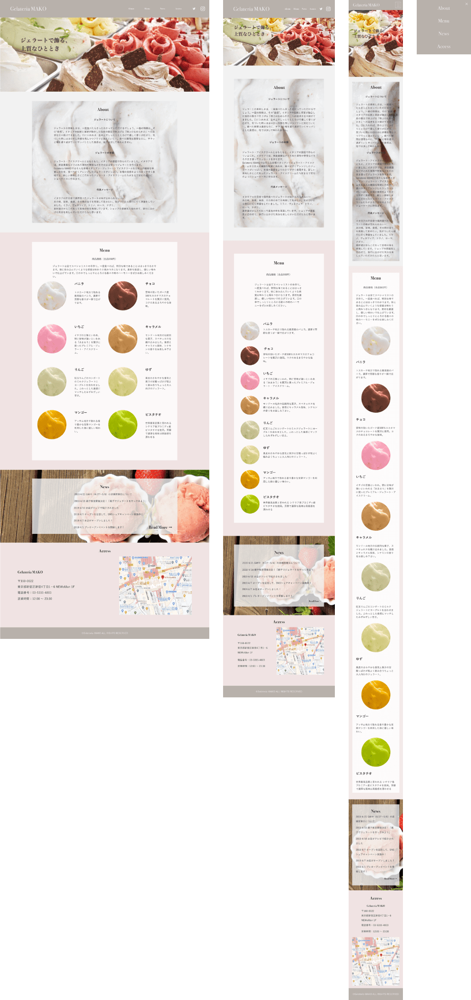
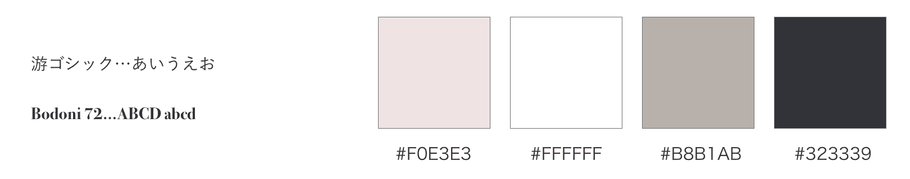
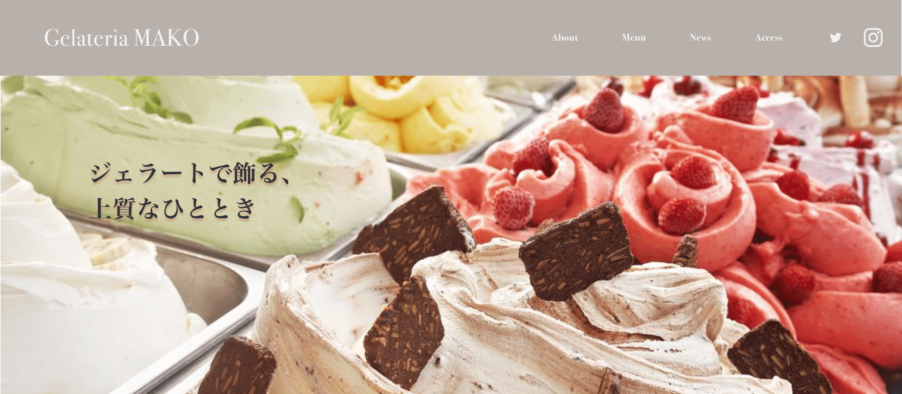
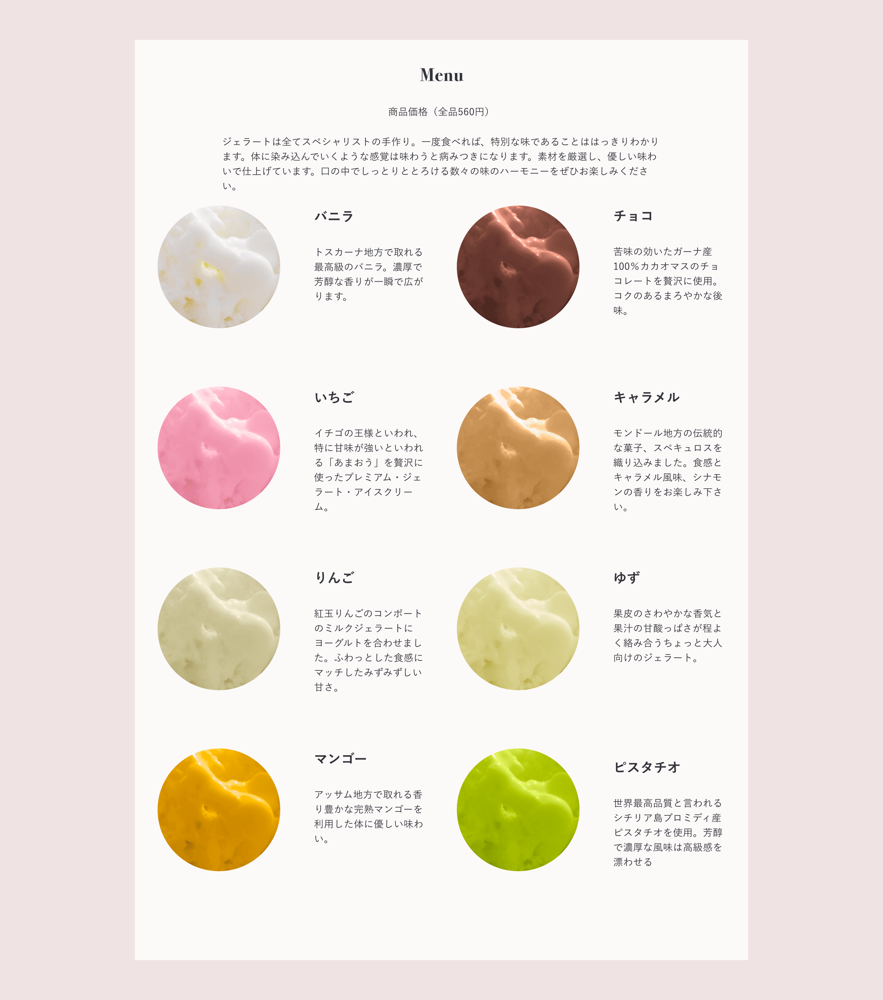

Gelareria Mako Webサイト
概要 overview
新宿のNEWoManに新しくオープンするジェラート屋の、集客を目的としたサイト制作（架空案件）。デザインからコーディングまで行いました。コンセプトは「シンプル×ナチュラル」で、やや彩度の高い生き生きとした画像と、大人な女性らしいくすみのあるピンクやグレーなどの色を、彩度を落として目に馴染みやすくデザインしました。
- 制作期間：2020/9/24〜2020/10/09（2週間）
- 担当箇所：デザイン・コーディング
- 使用ツール：Figma / Photoshop / HTML / CSS / jQuery
- URL：なし
制作プロセス Process

ターゲット
ペルソナ

デザイン
全体

フォントと配色

和文には、視認性の高い「游ゴシック」を使用し、読みやすさに配慮しました。欧文には、イタリア発祥の品の良さと女性らしい柔らかさを感じさせるイタリア発祥のbodani 72を選びました。配色はコンセプトの「シンプル×ナチュラル」を意識し、大人の女性らしいくすみピンクやグレーを使用。彩度を落とし、目に馴染みやすい自然な色合いにしました。フォントにはダークグレーを使用し、サイトにメリハリをつけました。
工夫点
ファーストビュー

彩度が高くカラフルな画像を使用し、生き生きとした印象にしました。コピーには余白に余裕を持たせ、「上質」であることが際立つようにしています。
メニュー

丸みの帯びたトリミングにより、親しみやすさを表現。フレーバーごとにカラーと明度を調整し見やすさをアップさせました。